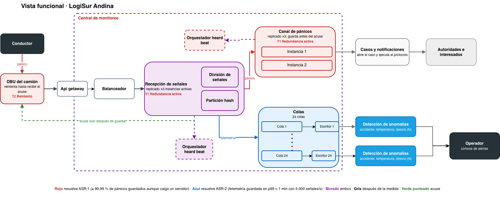

LogiSur Andina (LSA) · Propuesta de Arquitectura
Validada empíricamente con 75 corridas controladas en 12 contenedores Docker · Colombia, Ecuador y Perú

Disponibilidad (DIS-1)
100 %
0 pánicos perdidos ante SIGKILL y pérdida de nodo
Latencia Pánico (EXP-1c)
1,08 s
Meta < 2 s (antes: 4 min en paro nacional)
Pico 5.000/s (EXP-3)
0,75 s
24 colas · normaliza en ≤ 1,4 s (base: > 833 s)
Capacidad (ESC-2)
11.500/s
Lista para crecer de 18.000 a 40.000 camiones
Vista Funcional y de Concurrencia (Tácticas T1–T4)
Acuse síncrono tras replicar (durabilidad) separado de detección asíncrona en 24 pipelines

Vista Funcional · Clic para ampliar

Vista de Concurrencia · 3 receptores, 2 despachadores, 24 pipelines independientes
Vista de Contenedores y Aislamiento de Zonas
Ninguna falla o cierre de mes en LSA Plus puede impactar a la Central de Emergencias


Solo 2 conexiones asíncronas entre Zona Crítica y Zona de Clientes
Topología de Despliegue: Multi-AZ y Multi-Región Activa
2 Zonas de Disponibilidad en Bogotá + Failover Activo Colombia / Ecuador / Perú (Anycast DNS · PACELC)

Nivel 1: Región Bogotá (Zona A y Zona B con réplica sincrónica y clúster de 3 nodos de colas)

Nivel 2: Multi-Región Activa (Colombia primaria · Ecuador y Perú failover)
🔥 Simulador Interactivo de Fallas (EXP-1, EXP-1b y EXP-1c)
Inyecta un SIGKILL en vivo y compara cómo responde la arquitectura con réplicas vs. la línea base
⚡ Control de Caos en Vivo (flujo de pánicos en tiempo real)
● Sistema saludable
Pánicos Emitidos
0
Guardados en BD
0
Pánicos Perdidos
0
p99 Real Medido
1,08 s
📊 Comparativa Animada de Resultados Reales (EXP-1b · 58.000 pánicos/escenario)

▶️ Carrera en Vivo del Backlog en Pico de 5.000/s (EXP-2 y EXP-3)
Pulsa reproducir para ver cómo la cola única acumula 2,05 millones mientras las 24 colas procesan en 0,75 s
📈 Evolución Real del Backlog (t = 0 s → 600 s · Ventana de pico 30 s – 330 s)
Tiempo Simulado
0 s
Backlog Táctica (24 colas)
0
p99 = 0,749 s · Normaliza ≤ 1,4 s
Backlog Base (1 cola)
0
p99 > 832,8 s · Nunca normaliza

⚖️ Calculadora de Escalado (40.000 Camiones) y 24 Particiones
Explora las 24 colas reales medidas (pasa el mouse sobre cada barra) y proyecta el crecimiento de flota
🚛 Flota Proyectada: 40.000 camiones
📊 Distribución Real en las 24 Particiones · Hash FNV-1a(truck_id) (Pasa el cursor)
Pasa el mouse sobre cualquier partición (P0–P23) para ver el conteo exacto de señales y desviación.